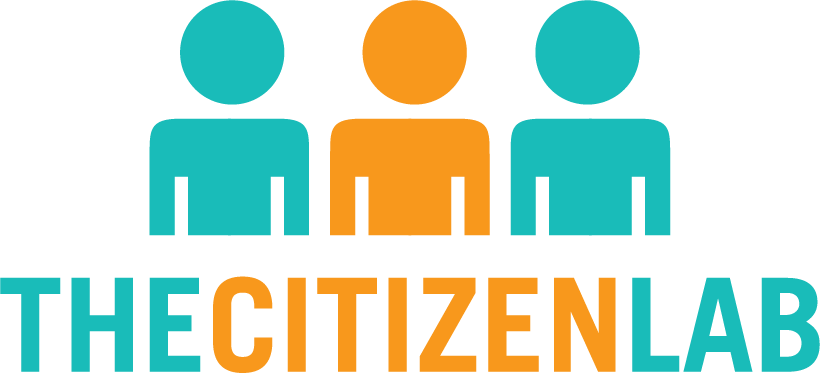

This symposium addresses urgent concerns regarding control of digital space within and beyond the art and
creative communities in Canadian and international contexts. It explores how artists and creators can
contribute to a more ethical web. Some of the key topics of the symposium include:
• examples of activism against censorship and surveillance in the arts in the Canadian and
international context
• examples of the current artist- and tech-involved initiatives of “taking back the web”
• and potential empowering alternatives in the digital sphere
The symposium will explore three approaches as examples of artist- and tech-involved
activism against two main and interconnected systems of oppression: artists as developers/co-developers
of the Web’s Infrastructure; artistic “gestures” as activism against online censorship and surveillance;
and storytelling— changing narratives through technology and science fiction.
Jillian C. York [Berlin] (Electronic Frontier Foundation)
Skawennati [Montreal] (Aboriginal Territories in Cyberspace)
Mathias Jud [Berlin] (Can you hear me?)
Jonathan Penney [Halifax] (Citizen Lab, Dalhousie U)
Sarah Friend [Toronto/Berlin] (Our Networks)
Garry Ing [Toronto] (Our
Networks, OCAD U)
Dante Sanchez [Toronto] (Toronto Mesh)
Connor Turland [Toronto] (Holochain)
Dawn Walker [Toronto] (Toronto Mesh, University of Toronto)
Curated and organized by Pegah Vaezi in conjunction with her Masters of Visual Studies in
curatorial studies thesis.
Presenting Sponsor
Sponsor
Community Partners

*The schedule is subject to minor changes.
*The schedule is subject to minor changes.
Jillian C. York is a writer and activist whose work examines the impact of technology on our societal and cultural values. Based in Berlin, she is the Director for International Freedom of Expression at the Electronic Frontier Foundation and a fellow at the Center for Internet & Human Rights at the European University Viadrina. Jillian co-founded Onlinecensorship.org, an award-winning project that seeks to encourage companies to operate with greater transparency and accountability toward their users as they make decisions that regulate speech. She is a frequent public speaker on topics including censorship, surveillance, and the impact of social media on our lives and our societies. Her writing has been published by the New York Times, Al Jazeera, the Atlantic, the Guardian, Quartz, The Washington Post, and Die Zeit, among others.
jilliancyork.com @jilliancyorkSkawennati makes art that addresses history, the future, and change from her perspective as an urban Mohawk woman and as a cyberpunk avatar. Her early adoption of cyberspace as both a location and a medium for her practice has led to groundbreaking projects such as CyberPowWow and the Skins workshops on Aboriginal Storytelling and Digital Media. She is best known for her machinimas—movies made in virtual environments—but also produces still images and sculpture. These are included in both public and private collections and have been widely presented across Turtle Island in major exhibitions such as Now? NOW! at Denver’s Biennial of the Americas and Looking Forward (L’Avenir) at the Montreal Biennale. Born in Kahnawà:ke Mohawk Territory, Skawennati graduated with a BFA from Concordia University in Montreal, where she resides. She is Co-Director of Aboriginal Territories in Cyberspace (AbTeC). In 2015 they launched IIF, the Initiative for Indigenous Futures.
skawennati.com @SkawennatiMathias Jud was born in Zurich lives and works in Berlin. Since over twenty years he works in a collective with Christoph Wachter. They are professors at the Weißensee Academy of Art Berlin, have participated in numerous international exhibitions and have been awarded many international prizes. Their art works include open-source projects that uncover forms of censorship of the Internet, undermine the concentration of political power and even resolve the dependency on infrastructure. The tools, provided by the artists, are used by communities in the USA, Europe, Australia and in countries such as Syria, Tunisia, Egypt, Iran, India, China and Thailand. Even in North Korea activists participate. But not everyone is fond of these projects. Their findings on secret prisons on US military bases in Guantanamo and Iraq have not been covered by the US media. The PR China denied Wachter and Jud to enter the country since 2013.
wachter-jud.net canyouhearme.deJonathan Penney is the Director of the Law and Technology Institute at Schulich School of Law, Dalhousie University in Canada; a Research Fellow at the Citizen Lab based at the University of Toronto’s Munk School of Global Affairs and Public Policy; and a Research Associate of both the Center for Information Technology Policy at Princeton University and the Civil Servant Project at the MIT Media Lab. Jon’s research lies at the intersection of law, technology, and human rights, with strong empirical, interdisciplinary, and social science dimensions. From the Internet today to artificial intelligence and beyond tomorrow, his work aims to understand technology’s role in public and private sector censorship, surveillance, and other emerging legal/regulatory practices—like the increasing automation of legal processes—including how people’s rights, interests, and activities are impacted. His doctoral thesis explored regulatory chilling effects online through a series of empirical legal case studies exploring how regulatory actions like online copyright enforcement or surveillance impact or “chill” people activities online. His work has received widespread international attention and press coverage, including the Washington Post, Reuters International, New York Times, Newsweek, TIME Magazine, NBC News, and more.
jonpenny.comSarah Friend is an artist and software engineer, with special interest in blockchain and the p2p web. She was a member of Consensys for over two years and is currently contributing to CirclesUBI, a permissionless democratically-operated universal basic income. When not doing that, she creates games and other interactive experiences. She is a proud Recurse Centre alum, and is one of the organizers of Our Networks, a conference on all aspects of the distributed web in Toronto.
isthisa.com @isthisanart_ ana0Garry Ing is a designer and researcher currently residing in Toronto. He is a contributor at Toronto Mesh, sessional faculty at OCAD University teaching interactive media, and co-organizer of Our Networks, a conference about the past, present, and future of building our own network infrastructures. His research practice is around network poetics, irl-to-url methods, near-future software, and net art. Previous work and collaborations has been with the Strategic Innovation Lab (sLab) at OCAD University, the Technologies for Aging Gracefully Lab at the University of Toronto, Normative, and Format.
skawennati.com @skawennatiDante Sanchez graduated from the University of Toronto with a Bachelor in Applied Science. In the last twelve years, he has developed instrumentation for Geophysics, Environmental, and Life Sciences research. He joined Toronto Mesh two years ago after growing increasingly concerned with issues surrounding online access, privacy, and surveillance. Toronto Mesh is a volunteer group dedicated to helping communities create better networks with open-source and peer-to-peer technologies that promote digital literacy and privacy.
@dasanc_ dasanchezConnor Turland is a software developer, educator, and facilitator, with a focus on collaborative, open source, and peer-to-peer technologies. He is especially concerned with finding ways to augment the conversations, and thus the thinking, that is necessary for humans to address the wicked challenges that face us collectively. This has led to much technical and social experimentation in tools and processes that restore agency, unlock higher potentials and collective intelligences. His work also hinges on the theory and practice of peer-to-peer as a basis for social interaction and non-hierarchical power structures.
@Connoropolous ConnoropolousDawn Walker is a researcher and PhD student at the University of Toronto focused on participatory design tactics for building environmental civic technologies. She also imagines possibilities for grassroots and decentralized (environmental) data with EDGI and Data Together. A keen urban agriculturalist, Dawn would rather be in the garden.
dcwalker.ca @dcwalk_